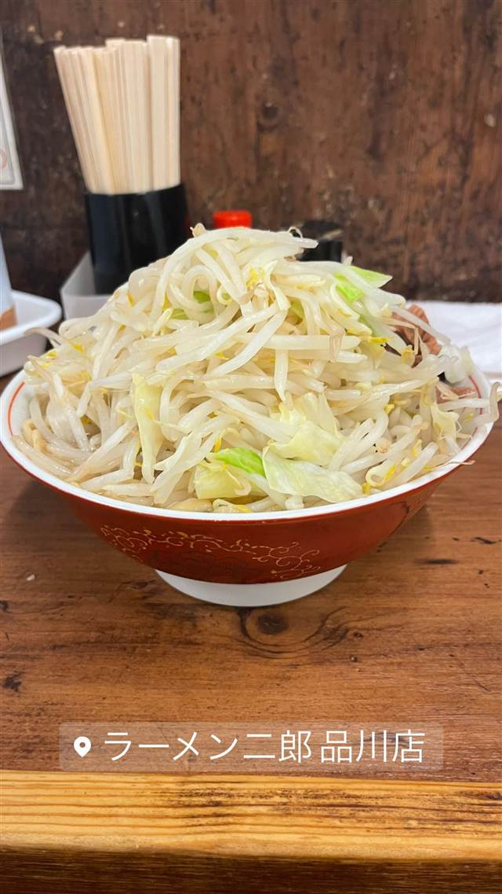

ラーメン二郎 品川店
後から三田本店へ弟子入りし直系認定された二郎ラーメン
ラーメン二郎 品川店
北品川にあるラーメン二郎の直系店。1997年の開業当初は別運営だったが、2003年に三田本店へ改めて弟子入りし正式な直系として認められたという珍しい経緯を持ち、極太麺と野菜マシマシの豪快な一杯を求めて行列ができる。
TRIVIA
豆知識
- 開業時は三田本店の直系ではなく、後年（2003年）に改めて本店へ入門し直系認定を受けたという珍しい成り立ちを持つ
REVIEWS
世間の評判
96.1ラーメンDB3.5食べログ
安定の二郎クオリティと肉厚な豚
- 非乳化タイプの濃厚な豚骨醤油スープと肉厚な豚を評価する声が多い
- 中太でちぢれのある麺の茹で加減が安定していると評されているようだ
- 券売機の位置やオプションの変化など長年の常連による観察も見られる
- 週末や金曜は30人規模の行列になることもあると触れられている
ラーメンデータベース 口コミ806件・総合193位・最新 2026-08
| 創業 | 1997年開業 |
|---|---|
| 系譜 | 1968年に山田拓美氏が東京・三田で創業した「ラーメン二郎」の系譜に連なる直系店。開業当初は別会社（ジローフードシステム）運営だったが、2003年の「ラーメン二郎」商標登録を機に三田本店へ改めて弟子入りし、正式な直系ラーメン二郎として認められた。 |
| 看板 | 二郎ラーメン（豚・野菜マシマシなどのコール） |
| こだわり | 極太麺、大量の茹で野菜、豚の背脂、にんにくなど二郎系特有の作り方を踏襲。 |
| どこから | 都心 |
| 行くなら | 行列 |
| 営業時間 | 月〜金 10:00-14:00、10:00-14:00、17:00-21:00 土 10:00-14:00 日 休み |
| 予算 | 昼 ～¥999 夜 ～¥999 |
| 場所 | 北品川駅 東京都品川区北品川1-18-5 |
| メモ | 行列必至、入店時に「ニンニク入れますか」等のコールあり、現金のみが基本。 |
食べたもの：二郎ラーメン
NEARBY
近い店・同じ系統の店
-
 ★
二郎系(直系) ひばりヶ丘
ラーメン二郎 ひばりヶ丘駅前店
笑顔の店主が迎える、二郎初心者にも入りやすい直系店
昼 ～¥999 夜 ～¥999
★
二郎系(直系) ひばりヶ丘
ラーメン二郎 ひばりヶ丘駅前店
笑顔の店主が迎える、二郎初心者にも入りやすい直系店
昼 ～¥999 夜 ～¥999
-
 ★
二郎系(直系) 京王堀之内駅
ラーメン二郎 八王子野猿街道店2
父も二郎系店主だった、父子二代にわたる直系二郎
昼 ~¥999 夜 ~¥999
★
二郎系(直系) 京王堀之内駅
ラーメン二郎 八王子野猿街道店2
父も二郎系店主だった、父子二代にわたる直系二郎
昼 ~¥999 夜 ~¥999
-
 ★
二郎系(直系) 伊勢佐木長者町駅
ラーメン二郎 横浜関内店
二郎の「汁なし」を早くから始めた発祥格の直系店
昼 ～¥999 夜 ～¥999
★
二郎系(直系) 伊勢佐木長者町駅
ラーメン二郎 横浜関内店
二郎の「汁なし」を早くから始めた発祥格の直系店
昼 ～¥999 夜 ～¥999
-
 ★
二郎系(直系) 松戸
ラーメン二郎 松戸駅前店
元は「ラーメンショップ」だった店が二郎に転換、三代続く味
昼 ～¥999 夜 ～¥999
★
二郎系(直系) 松戸
ラーメン二郎 松戸駅前店
元は「ラーメンショップ」だった店が二郎に転換、三代続く味
昼 ～¥999 夜 ～¥999
-
 ★
二郎系(直系) 神保町
ラーメン二郎 神田神保町店
三田本店直系の乳化系濃厚豚骨醤油が自慢の二郎ラーメン
昼 ¥1,000～¥1,999
★
二郎系(直系) 神保町
ラーメン二郎 神田神保町店
三田本店直系の乳化系濃厚豚骨醤油が自慢の二郎ラーメン
昼 ¥1,000～¥1,999
-
 ★
二郎系(直系) 中山駅
ラーメン二郎 中山駅前店
非乳化スープと柔らかめの極太麺「デロ麺」が名物の二郎直系
昼 ¥1,000～¥1,999 夜 ¥1,000～¥1,999
★
二郎系(直系) 中山駅
ラーメン二郎 中山駅前店
非乳化スープと柔らかめの極太麺「デロ麺」が名物の二郎直系
昼 ¥1,000～¥1,999 夜 ¥1,000～¥1,999
ONSEN & SAUNA